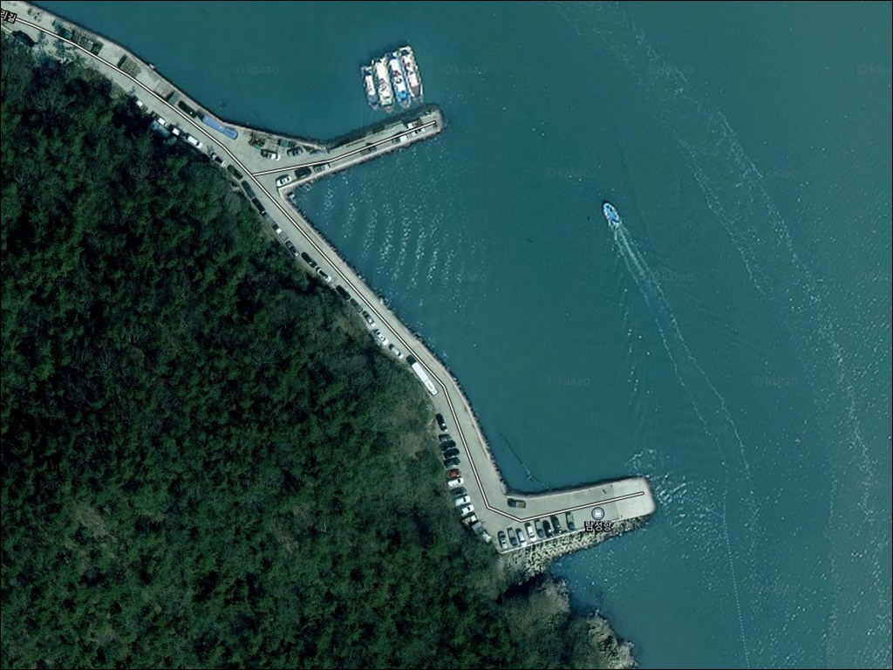
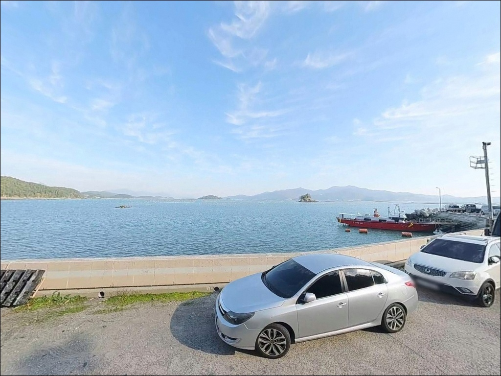
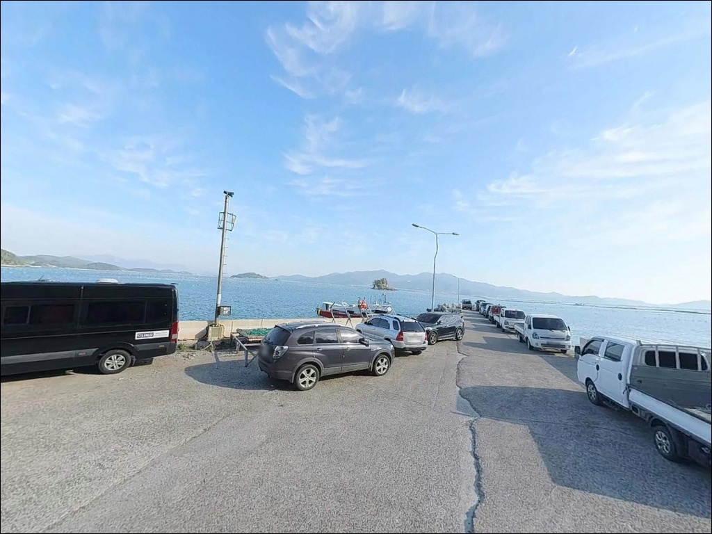
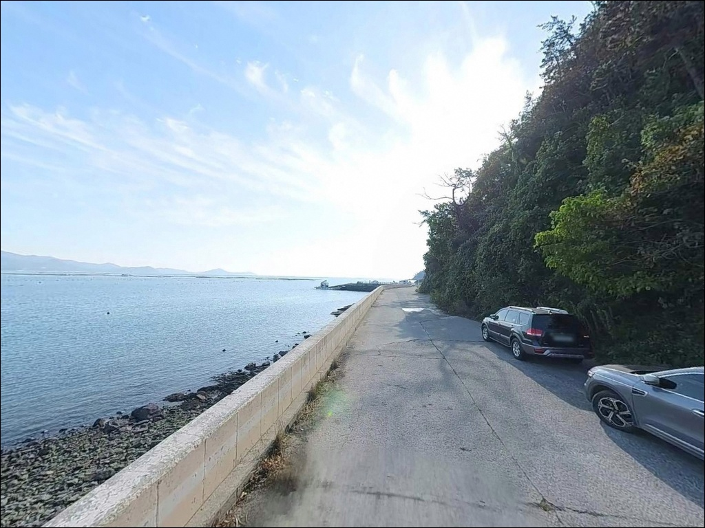
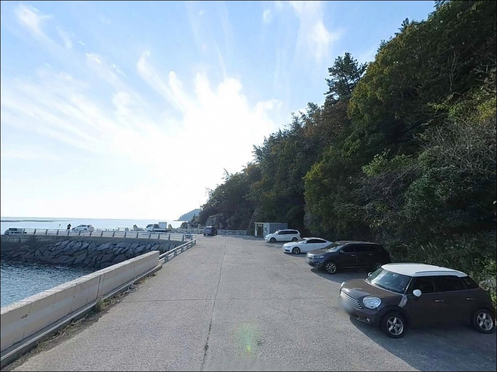
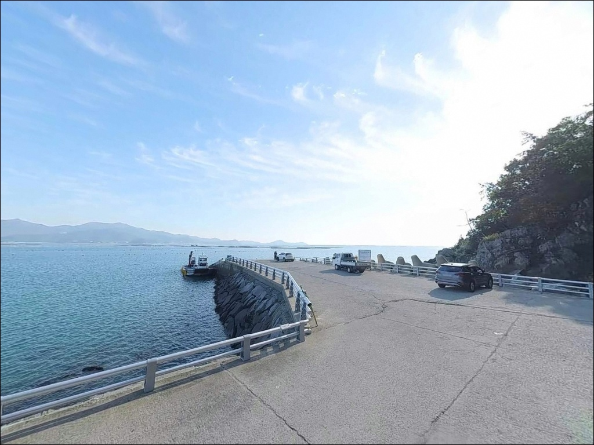
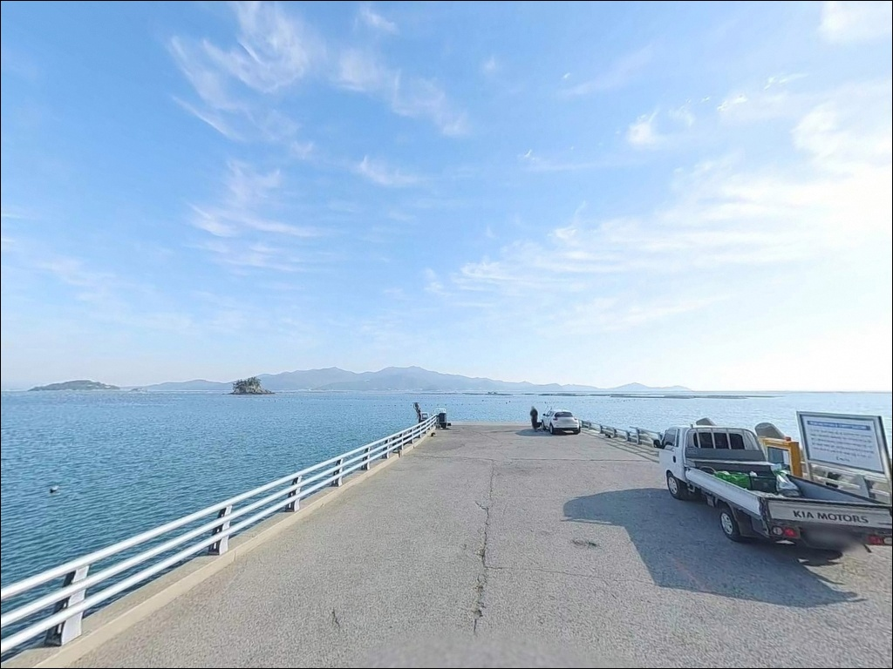
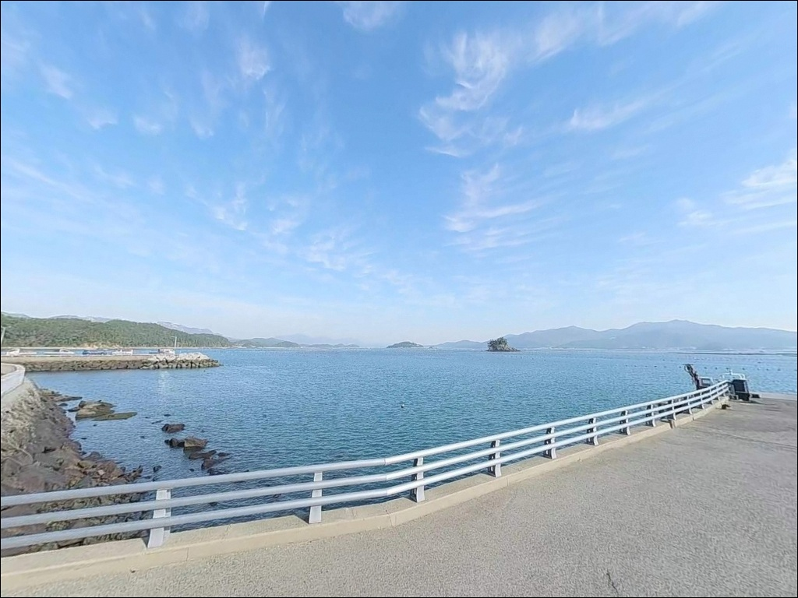
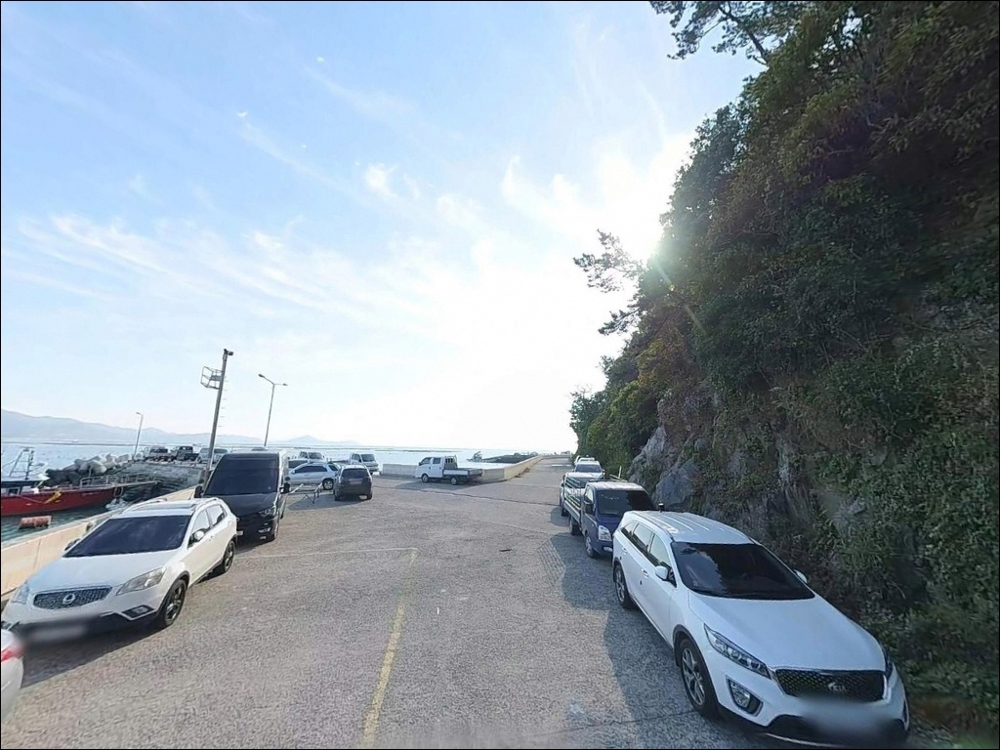

남성방파제, 남성항선착장, 영전리선착장, 전남 해남군 차박 캠핑과 생활 바다 낚시의 환상 조합 장소
이 페이지에는 광고(제휴 링크 포함)가 있으며, 광고 링크를 통해 구매하면 운영자가 판매 수익 또는 수수료를 받을 수 있습니다. 포인트 사진: 카카오맵 스카이뷰·로드뷰. 이 페이지의 지도·사진 이미지는 카카오맵의 실제 서비스 이미지와 다를 수 있습니다.


포인트 안내
남성방파제(영전리선착장)
전남 해남군 북평면 영전리 1433-13
물때 확인 없이 이 선착장에 들어서면
간조 전후 수위가 급격히 낮아지며
채비를 세울 수심조차 확보되지 않는 상황을
맞닥뜨릴 수 있습니다.
만조 전후 2시간이 영전리선착장 내만 구조에서
가장 현실적인 낚시 타이밍입니다.
전남 해남군 북평면 영전리,
국도 77호선이 해안선을 따라 지나는 이 지역에
자리한 영전리선착장은
양식장이 밀집한 내만 환경 속에서
조용하게 원투와 찌낚시를 운용할 수 있는
마을 포구형 포인트입니다.
이 글은 영전리선착장의
진입 환경, 차박 여건, 물때 판단 기준,
낚시 지형 조건에 집중합니다.
조황 단정이나 특정 어종 보장은
이 글의 범위에 포함되지 않습니다.

1. 진입 동선과 포인트 접근성
국도 77호선이 북평면 해안선을 따라
연결되어 있어 영전리까지의 주도로 접근성은
나쁘지 않습니다.
다만 선착장까지 진입하려면
마을 안쪽 소로를 거쳐야 하며,
1차선 내외 폭의 좁은 구간이
포함되어 있습니다.
소형~중형 차량이라면
마을 소로 진입 자체에 큰 어려움은 없는 편이나,
대형 캠핑카나 루프탑 텐트 차량은
출발 전 위성지도로 선착장 끝단 공간을
반드시 확인하는 편이 좋습니다.
회차 공간이 협소한 구조이므로
후진 진출이 어려운 차량은
갓길 여건도 함께 살펴야 합니다.
주차는 선착장 진입부 공터와
도로변 여유 공간을 활용하는 방식이
일반적입니다.
어선 하역 및 양식 작업 차량의
이동 동선을 막지 않는 자리가 우선이며,
이른 오전 시간대에는
어업 활동으로 통행이 늘어날 수 있습니다.

2. 차박 환경과 야간 체류 여건
영전리 남성마을 권역은
전복 양식과 어업에 종사하는 주민이
모여 사는 소규모 어촌 마을입니다.
야간 차량 통행이 크게 많지는 않지만,
민가와 완전히 분리된 고립형 환경은 아닙니다.
양식 관련 이른 아침 작업 동선이
선착장과 겹칠 수 있습니다.
국도 77호선이 인근을 지나는 구조상
차량 통행 소음이 어느 정도 존재하는 편입니다.
파도 영향은 내만 특성상
외해 대비 잔잔한 환경이며,
차박을 메인 목적으로 삼기보다는
낚시 후 조용히 하룻밤 머무는 용도로
운용하는 방식에 어울리는 구조입니다.
가로등은 마을 선착장 특성상
1~2개 수준으로 설치되어 있거나
별도 조명이 없는 구간이 있을 수 있습니다.
야간 낚시와 차박을 함께 계획하는 경우
헤드랜턴과 보조 랜턴 모두 챙기는 편이
안전합니다.


3. 주변 편의시설 및 인프라 현황
선착장 바로 인근에서는
편의점이나 식당을 기대하기 어렵습니다.
다만 차량으로 약 5분 거리의
남창리(북평면사무소 인근) 일대에
농협 하나로마트, 편의점, 식당, 주유소가
모여 있어 출조 전 보급에는
큰 어려움이 없는 편입니다.
식수, 얼음, 여분 채비는
남창리에서 미리 갖춰두고
선착장으로 이동하는 동선이
현실적입니다.
응급 상황에 대비해
비상 연락처와 기본 약품도
차 안에 갖춰두는 편이 좋습니다.

4. 낚시 자리가 달라지는 진입 전 확인사항
영전리선착장 방문 전에
가장 먼저 확인할 것은 물때입니다.
내만형 구조 특성상 간조 전후에는
수심이 크게 낮아져
채비를 안정적으로 운용하기 어려워집니다.
바다타임에서 해남 북평 기준 물때를 확인하고
만조 전후 타이밍에 맞춰
출발 시각을 정하는 것이 기본 전략입니다.
선착장 주변에는 양식 시설이
가까이 배치되어 있는 구조입니다.
원투 캐스팅 방향이 양식 구역과 겹치면
채비 손실이 발생할 수 있으므로,
출발 전 위성지도로
양식 시설 위치를 먼저 파악해두는 것이
포인트 운용의 기본 조건입니다.
슬립웨이(경사로) 구간은
물기가 남아 있을 때 매우 미끄럽습니다.
야간 원투낚시를 계획한다면
미끄럼 방지 기능이 있는 낚시화와
구명조끼를 반드시 갖춰야 하며,
어선 계류 밧줄과 어구는
건드리지 않는 것이 기본 매너입니다.

5. 지형 기반 낚시 여건 분석
영전리선착장은 전형적인 내만형 구조로,
외해에 대한 직접 노출도가 낮은 편입니다.
파도와 너울의 영향이 상대적으로 적고
수면이 잔잔한 환경이라
찌 세우기에 유리한 조건이 갖춰져 있습니다.
선착장 끝단이 상대적으로 수심이 나오는 구간으로,
이 지점을 중심으로 공략하는 방식이
이 포인트 구조에 맞습니다.
바닥 지형은 모래와 펄이 섞인 사니질 구조가
이 일대 내만에서 일반적입니다.
완만하게 깊어지는 수심 구조로,
간조 시에는 수위가 크게 낮아지므로
만조 전후를 타이밍으로 삼아
선착장 발밑과 그 너머 구간을
순서대로 탐색하는 방식이 유효합니다.
완도와 해남 사이 수로형 지형에 위치한
이 해역은 물때에 따른 조류 소통이
있는 편입니다.
조류가 살아 움직이는 타이밍에
원투 채비와 찌낚시 채비가
동시에 힘을 발휘하는 구조이며,
정조에 가까워질수록 입질이 뜸해지는
이 해역의 일반적인 패턴을 감안해
자리 운용을 판단하는 편이 좋습니다.
출조 전에 영전리 일대 최신 조황은
꼭 한 번 검색해 보시기 바랍니다.


6. 포인트에 어울리는 낚시 스타일
이 포인트에서 가장 잘 맞는 낚시는
원투낚시입니다.
사니질 바닥과 내만 수심 구조는
붕장어, 도다리, 보구치 계열을
바닥층에서 공략하기 적합한 조건입니다.
야간 원투는 이 해역 내만에서
붕장어 입질이 기대되는 방식으로
만조 전후 타이밍에 운용하는 방식이
어울립니다.
찌낚시도 이 포인트 지형에 맞는 스타일입니다.
수면이 잔잔한 내만 환경은
찌 세우기에 유리한 조건이며,
양식장 인근에는 감성돔이 붙는
이 해역의 일반적인 패턴이 적용될 수 있습니다.
선착장 끝단 발밑에서
찌를 흘리는 방식이 기본 접근법입니다.
라이트루어로 선착장 주변 석축과
끝단 구간을 탐색하는 방식도
시도해볼 만합니다.
볼락이나 가자미류가 서식하기 좋은
지형 조건이 갖춰져 있으며,
야간 소형 지그헤드 채비로
발밑과 석축 경계를 천천히 훑는 방식이
이 선착장 환경에 어울립니다.
갑오징어 에깅도 계절에 따라
시도해볼 수 있는 방식입니다.
물 유입이 활발한 시기에
조류가 돌아 들어오는 방향으로
에기를 천천히 운용하는 방식이
내만 환경에서의 기본 접근법입니다.
다만 양식 시설이 밀집한 구역 방향은
채비 손실이 발생할 수 있으니
방향 선정에 주의가 필요합니다.

7. 대안 포인트와 플랜 B 동선
영전리선착장 조건이 여의치 않거나
더 외해에 가까운 수심을 원한다면
어란진항(해남군 송지면 어란리)이
첫 번째 대안입니다.
국가어항으로 등록된 곳으로,
방파제 외항 기준 발밑 5~6m,
깊은 곳은 8~9m 수심을 갖추고 있습니다.
감성돔, 볼락, 갈치, 붕장어, 도다리 등이
이 포인트에서 기대되는 어종으로
알려져 있습니다.
어란진항 방파제 외항 꺾인 구간이
주요 포인트 구간으로 꼽히며,
영전리선착장과 달리
공개 조황 정보도 상대적으로 많아
처음 방문하는 경우에도
진입 난이도가 낮은 편입니다.
어란리 도보 갯바위(어불리승강장 인근)는
배를 타지 않고 접근 가능한 구간으로,
찌낚시 감성돔을 노리는 낚시인이라면
플랜 B에 함께 넣어두기 좋은 곳입니다.
북평면 해안선에는 남성방파제 인근의
안평마을 방파제도 연계 탐색이
가능한 구조입니다.

물때를 알고 들어가면
영전리선착장이 다르게 보입니다
원투낚시나 감성돔 찌낚시를
즐기는 낚시인이라면
영전리선착장의 내만 구조는
잔잔한 수면에서 찬찬히 공략하기
좋은 조건입니다.
외해보다 수심이 얕은 대신
파도와 바람의 영향이 적어
채비 운용이 안정적이고,
온라인 정보가 많지 않은 만큼
직접 발품을 팔아야 하는
탐색형 포인트이기도 합니다.
반면 물때 계산 없이 간조 전후에 도착하거나,
양식 시설 방향을 확인하지 않고
무작정 원투 채비를 던지면
채비 손실과 빈 자리를
동시에 맞닥뜨릴 수 있습니다.
물때 확인, 양식 구역 파악, 진입로 사전 점검,
이 세 가지를 갖추고 간다면
조용하고 알찬 포인트가 될 수 있는 곳입니다.
남창리 생활권이 차량 5분 거리에 있어
보급 걱정 없이 하룻밤 머물기 좋고,
마을 어촌의 조용한 밤 분위기를
차 안에서 즐기는 차박 낚시 여행자라면
내만 선착장 특유의 잔잔함이
기억에 남는 경험이 될 수 있습니다.